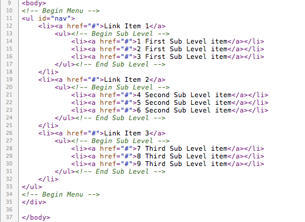

Created: 20/06/2010
By: Playlab
Email: hello@myplaylab.com
Thank you for purchasing my product. If you have any questions that are beyond the scope of this help file, please feel free to email via my user page contact form here. Thanks so much!
This is a CSS3 Dropdown menu with two sub-level navigation. Here is the general structure.
I'm using one CSS files in this theme. The file is separated into sections using:
/* General style */ some code /* Menu style */ some code /* Sub Menu style */ some code
If you would like to edit a specific section of the Css3 Horizontal Drop Line Menu, simply find the appropriate label in the CSS file, and then scroll down until you find the appropriate style that needs to be edited.